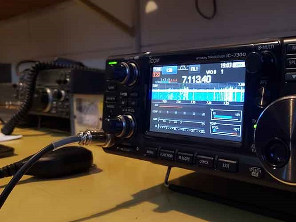

El Codigo del Radioaficionado

-
El radioaficionado es sincero; siempre cumple con lo que promete u
ofrece. Ayuda y colabora desinteresadamente.
-
El radioaficionado es estudioso; se preocupa de adquirir nuevos
conocimiento, experimenta y entrega sin egoísmo su experiencia a otros
radioaficionados.
-
El radioaficionado es tolerante; siempre acepta y respeta las opiniones
de sus colegas y hace de la amistad un culto.
-
El radioaficionado es respetuoso; no debe salir al éter descuidadamente
molestando a los demás. Si lo hace, pedirá excusas por su comportamiento
y se retirara.
-
El radioaficionado es disciplinado; ajustara su actividad a los
preceptos contenidos enreglamentos y normas determinadas por las
autoridades competentes.
-
El radioaficionado es comprensivo; estará siempre dispuestoa prestar su
ayuda y colaboración en situaciones de emergencia, poniendo sus equipos
y esfuerzo personal a disposición de quien le necesite.
-
El radioaficionado es correcto; no usara en sus términos que sean
ofensivos o contrarios a la moral y a las buenas costumbres.
-
El radioaficionado es culto, emplea en sus comunicados correctamente su
idioma y no recurre a modismos que dañan la imagen de su país.
-
El radioaficionado es responsable; la radio afición es su pasatiempo y
procura que ella no le distraiga de sus obligaciones con el hogar, la
familia, el trabajo o el estudio.
-
El radioaficionado es leal; dedica esfuerzo y tiempo a engrandecer,
robustecer y ennoblecer a la institución que lo cobija.
CODIGO DEL RADIOAFICIONADO INTERNACIONAL:
-
EL RADIOAFICIONADO ES UN CABALLERO... Nunca a sabiendas, utiliza el éter
para su propia diversión en forma tal que moleste a los demás. Coopera
por el bien público con las autoridades constituidas.
-
EL RADIOAFICIONADO ES LEAL... Debe el poder desarrollar su afición a las
entidades que lo agrupan y les ofrece su lealtad incondicional.
-
EL RADIOAFICIONADO ES PROGRESISTA... Procura mantener su estación y
equipo de acuerdo con los progresos de la ciencia, manipulándolos con
regularidad y eficiencia.
-
EL RADIOAFICIONADO ES CORDIAL... Amable y paciente cuando es necesario,
presta siempre su consejo y ayuda al principiante y cuida de no molestar
a ningún oyente de radiodifusión.
-
EL RADIOAFICIONADO ES DISCIPLINADO... La radio es su pasatiempo y no
permite que ella le distraiga de sus ocupaciones y deberes contraídos,
ya sea en su hogar, en el trabajo, en el estudio o en la comunicación.
-
EL RADIOAFICIONADO ES PATRIOTA... Sus conocimientos y su estación están
siempre listos para servir a su Patria y a la comunidad que le rodea.
(Redactado en 1.928 por PAUL M. SEGAL)